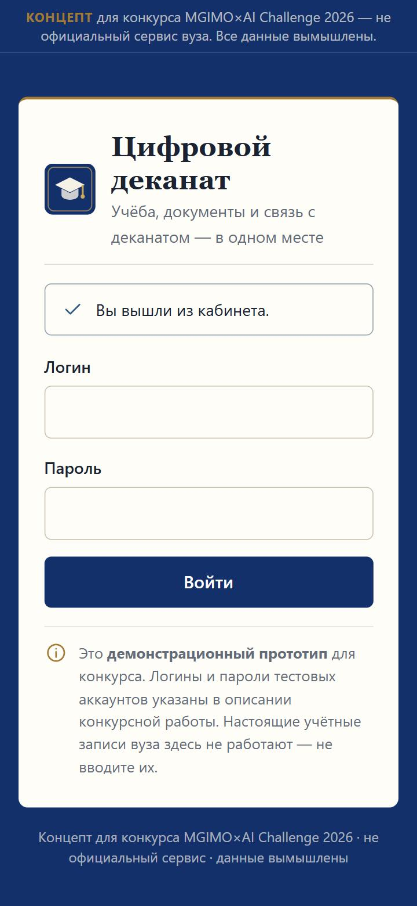
Концепт для конкурса, не официальный сервис вуза. Все люди, оценки и заявки вымышлены.
student1, student2, сотрудник деканата dekanat. Пароли — в комментарии к заявке.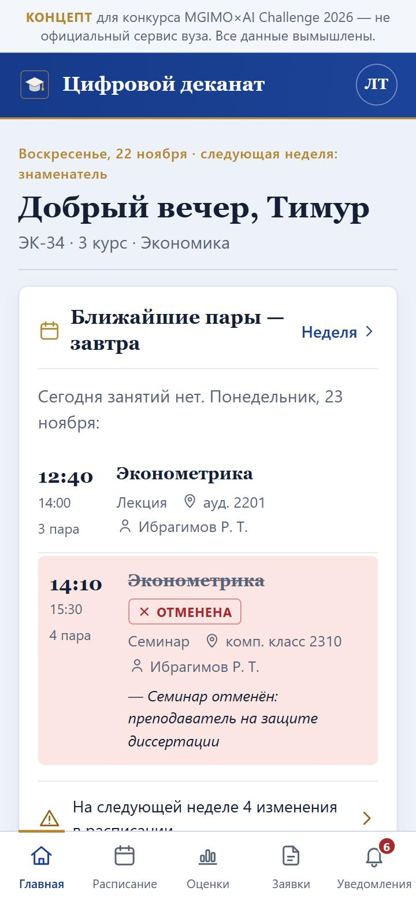
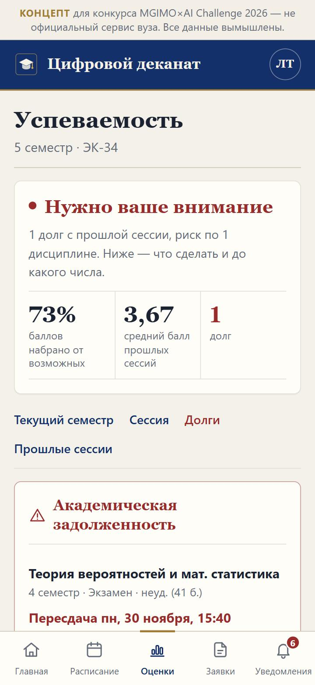
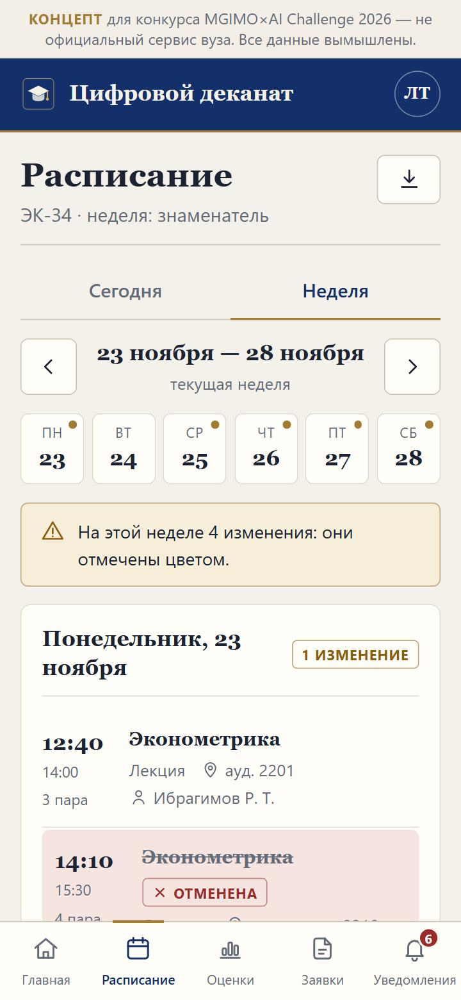
Сейчас студенту для обычных дел нужно несколько мест сразу: расписание в одной таблице, о переносах пишут в чатах групп, баллы у каждого преподавателя свои, а за справкой нужно идти в деканат в часы приёма и потом ещё раз — забирать. Главный вопрос студента «как у меня дела и что мне сделать на этой неделе» быстрого ответа не имеет.
Кабинет собирает это в одном месте и отвечает на четыре вопроса:
| Вопрос студента | Раздел |
|---|---|
| Куда идти сегодня и что поменялось? | Расписание: сегодня и неделя, числитель/знаменатель. Изменения выделены цветом, старая аудитория зачёркнута, рядом причина. Экспорт в календарь телефона. |
| Меня допустят к сессии? Хватает ли на стипендию? | Успеваемость: одна фраза-вывод, баллы против порога допуска, совет по каждой дисциплине, долги с датой пересдачи, расписание сессии, прошлые сессии. |
| Как получить справку, не стоя в очереди? | Заявки и справки: заказ за минуту, статусы «Подана → В работе → Готово → Завершена», история, электронная справка-образец. |
| Что я пропустил? | Уведомления: новости деканата, изменения в расписании, статусы заявок и дедлайны на 3 недели в одной ленте. |
Профиль (ФИО, факультет, направление и профиль, курс, группа, форма и основа обучения) — точка опоры: все разделы показывают данные именно этого студента и его группы. На главной собрано главное из каждого раздела, так что почти на любой вопрос студент отвечает с первого экрана.
Для деканата сделан второй кабинет: очередь заявок с поиском, смена статуса (студенту сразу приходит уведомление; отказать без причины нельзя) и рассылка новостей группе или всем. Без него статусы заявок были бы декорацией.
Установка на телефон. Кабинет — это сайт по ссылке, но его можно добавить на главный экран как приложение (PWA): своя иконка, запуск без адресной строки, страница «Нет соединения» без интернета. На Android в профиле есть кнопка «Установить на телефон», на iPhone — «Поделиться → На экран „Домой“». Отдельное приложение из магазина жюри устанавливать не нужно.
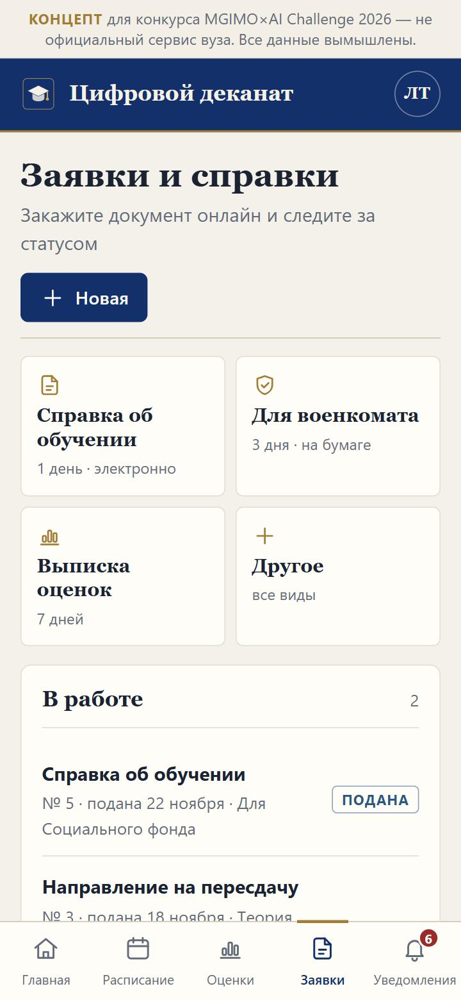
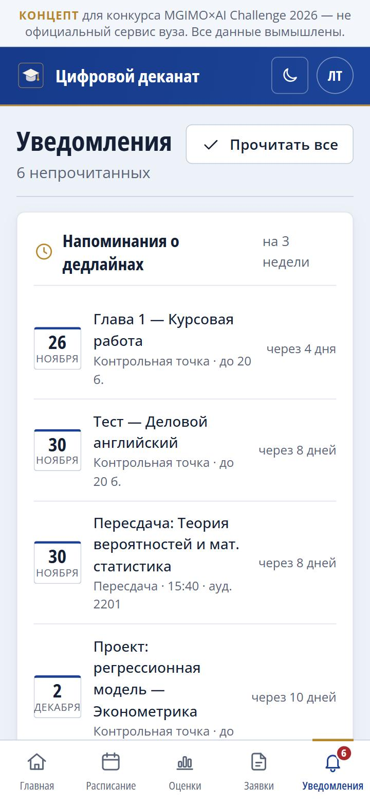
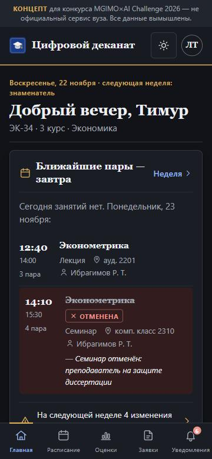
| Инструмент | Зачем |
|---|---|
| Claude Code — агент в десктоп-приложении Claude, модель Claude Opus 5.5 | Основной разработчик: план, модель данных, сервер, шаблоны, стили, демо-данные, автотесты, README, AGENTS.md, черновик этого описания. Сравнил хостинги: проверил доступность и прочитал документацию Amvera через веб-поиск. Работал в отдельной папке и коммитил по шагам. Пароли, регистрацию и отправку кода на хостинг оставлял человеку. |
| Встроенный браузер Claude | Агент сам открывал прототип на ширине 360 px и 1280 px, в светлой и тёмной теме. Проходил сценарии (вход, заявка, выход, вход сотрудником), скриптом искал элементы шире экрана, проверял ответы 404 и 403 на чужие адреса. Отсюда же скриншоты. |
| pytest | 31 сквозной автотест: каждое изменение ИИ проверяется сразу. |
| Python 3.11, FastAPI, Jinja2, SQLAlchemy, bcrypt | Стек прототипа, все библиотеки под лицензиями MIT, BSD или Apache. Страницы рендерятся на сервере: права проверяются в одном месте, секретов в браузере нет. |
| Git | История версий и деплой (git push на хостинг). |
| Amvera (amvera.ru) | Российский хостинг: открывается без VPN, деплой через git, бесплатный HTTPS-домен, постоянный диск для базы. Работает на стартовом бонусе, команда ничего не платила. |
| Microsoft Edge | Печать этого описания из HTML в PDF. |
Промпты приведены близко к оригиналу: сокращены и поправлены опечатки и разговорные слова.
Сделай за сегодня рабочий прототип… Обязательное ядро: 1) вход по логину и паролю, профиль: ФИО, факультет, направление, курс, группа; 2) расписание на сегодня и на неделю: аудитория, преподаватель, заметные переносы и изменения; 3) успеваемость… понятная картина «как у меня дела»; 4) заявки и справки… видеть статус; 5) уведомления…
Требования: настоящий работающий прототип по ссылке… работает на телефоне от 360 px; данные только вымышленные… Безопасность проверяется: чужой профиль или заявку не открыть даже подменой адреса (проверка прав на сервере); пароли хранятся хешем…
Порядок: 1) сначала хостинг — главный риск… 2) узкий объём: ровно пять разделов… 3) проверь безопасность руками… 4) по ходу собирай материалы…
Сработало то, что критерии сформулированы проверяемо («подмена id → 404», «360 px», «пароли хешем»). Агент превратил их в автотесты до того, как показывать результат. Отдельно в промпте заданы рамки: не трогать чужие папки, писать код с нуля, не вводить пароли и не создавать аккаунты.
Сравни 2–3 варианта… по доступности из РФ, бесплатности и скорости деплоя и предложи один. Аккаунты регистрирует сам пользователь: ты не вводишь пароли и не создаёшь аккаунты, только говоришь, что сделать.
Первый ответ агента про оплату тарифа нас не устроил:
Что за прикол? Почему мы должны платить на хакатоне? Давай какой-нибудь бесплатный вариант.
Агент перепроверил варианты. Бесплатные зарубежные хостинги (Vercel, Render, Railway) с 2025 года режутся российскими провайдерами, и жюри без VPN увидело бы пустую страницу. На бесплатном PythonAnywhere не запускается FastAPI. А у Amvera есть стартовый бонус: при поминутной оплате его хватает до начала декабря. Регистрацию человек сделал сам, агент по скриншотам подсказывал каждый шаг мастера. Когда мастер Amvera сам закоммитил свой конфиг, агент слил историю без принудительной перезаписи.
Агент предложил сервер с рендерингом страниц вместо SPA и обосновал выбор:
Модель данных разделена на справочники (факультет → направление → группа) и личные данные студента. Демо-данные считаются от дня первого запуска, поэтому «сегодня» в расписании всегда актуально. Два студента нарочно разные: у одной всё хорошо и бюджет, у другого контракт, долг с пересдачей и риск по дисциплине.
Продолжай. Порядок: 1) requirements.txt, запуск локально, проверка всех пяти разделов, входа, разделения данных двух студентов (подмена id → 404) и ширины 360 px; 2) первый коммит; 3) деплой…
Агент прогнал тесты, открыл прототип во встроенном браузере на 360 px и прошёл каждый раздел. Отправил заявку, руками перебрал адреса чужих заявок, справок, уведомлений и страниц сотрудника. Нашёл и исправил ошибки из раздела 5. Правила, на которых ИИ уже ошибался, записаны в AGENTS.md — документ для следующих агентов.
Первую версию мы открыли на телефоне уже на хостинге. Всё работало, но вид был слишком типовым: пастельные плашки, цветная полоска слева у карточки, крупные скругления. С первого взгляда видно «интерфейс, сгенерированный ИИ», и он никак не связан с вузом. Промпт:
Надо поработать над дизайном: слишком сильно видно, что делал ИИ. Мы ведь делаем это для МГИМО? Может, взять дизайн, который больше им подходит: цвета, темы, какие-то концепции. А то вот такие блоки сильно выдают, что это делал Claude.
Агент предложил академичную систему. Логотип и фирменный стиль вуза не копировали: по правилам конкурса кабинет должен выглядеть как концепт.
Потом ещё два коротких круга по отзывам с телефона и ноутбука: «фон блеклый, клонит в сон» — светлый прохладный фон, белые карточки, ярче синий и золото. «На ноуте блоки желейные, нет чёткого разделения» — больше воздуха и явная раскладка главной по колонкам. «Синий с чёрным — перебор, сделай белым, как приложение» — по умолчанию теперь всегда светлая тема, а тёмная включается кнопкой «луна/солнце» и перекрашена в спокойный графит без ярко-синего. И последнее: «меню слишком выделяется, а оценки выглядят навайбкоженно» — в светлой теме меню стало белым, а сетка карточек с пилюлями в оценках превратилась в строгую ведомость: строки с тонкой шкалой, баллами и статусом-точкой, раскрываются по клику. Финальный штрих: «шрифт палит работу — возьми тот, что реально используется, как в ЛК УрФУ» — заголовки с засечками заменены на Open Sans. Вся смена дизайна — один файл стилей: разметка страниц почти не менялась, автотесты прошли без правок.


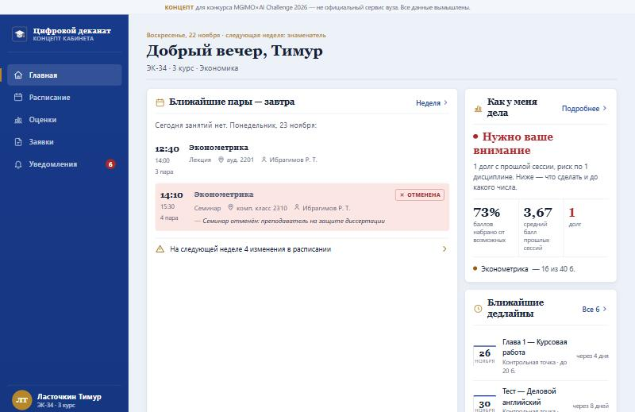
| # | Что сделал ИИ | Как нашли | Как исправили |
|---|---|---|---|
| 1 | Назвал список контрольных точек items. В Jinja r.items — встроенный метод словаря, страница успеваемости падала с TypeError. | Автотест «все страницы отдают 200» | Ключ переименован в kts, правило записано в AGENTS.md. |
| 2 | Страница 404 обращалась к группе студента после закрытия соединения с базой (DetachedInstanceError). На чужую заявку вместо «Не найдено» получалась ошибка 500. | Автотест «чужая заявка → 404» | Группа, направление и факультет загружаются вместе с пользователем. |
| 3 | CSS text-transform: capitalize в строке даты: «Воскресенье, 22 Ноября». | Просмотр на 360 px | Заглавной делается только первая буква. |
| 4 | В воскресенье главная писала «неделя: числитель» (уже закончилась), а расписание показывало следующую неделю — знаменатель. | Сверка экранов | Главная в воскресенье пишет «следующая неделя: знаменатель». |
| 5 | Подставил название дисциплины в неверном падеже: «подтяните Статистика для международников». | Чтение текстов | «Стоит подтянуть: «Статистика для международников»». |
| 6 | Средний балл с точкой: «4.62». | Просмотр | Фильтр decimal → «4,62». |
| 7 | Главная: «на этой неделе 4 изменения», расписание за ту же неделю: «5 изменений». Перенос пары считался дважды. | Сравнение скриншотов | Оба экрана считают одной функцией changes_between. |
| 8 | Ряд кнопок-якорей на 360 px уезжал за край экрана. | Скрипт: элементы шире экрана | Кнопки переносятся на вторую строку. |
| 9 | При смене дизайна запретил перенос кнопки «Прочитать все», и страница уведомлений стала шире телефона: 374 px вместо 360. | Тот же скрипт после редизайна | Заголовок страницы переносит кнопку на новую строку. |
| 11 | Новые правила для компьютера и кнопка темы перебивались базовыми стилями ниже по файлу: приветствие без отступов, вместо иконки луны — белый квадрат. | Скриншоты после каждой правки | Слой правил для компьютера вынесен в конец файла, у кнопки поднят приоритет селектора. |
| 12 | После смены шрифта в плитке даты не помещалось «ЯНВАРЯ 2027» — текст выползал из рамки. Полоска загрузки мигала при каждом быстром переходе. | Скриншот человека с телефона | Короткий месяц («ЯНВ»), полная дата во всплывающей подсказке. Полоска появляется только после 0,4 с ожидания, страницы сменяются плавно. |
| 10 | Первым предложил платный тариф хостинга, хотя бонус Amvera покрывает весь срок конкурса. | Вопрос человека | Пересчитал: бонус 111 ₽ при 0,40 ₽ в час хватает примерно на 11 дней, это после 28 ноября. |
Логические ошибки (1–2) поймали автотесты, которые агент написал сам по критериям из промпта. Ошибки «человеческого» качества (3–9, 11: падежи, типографика, противоречия между экранами, вёрстка) нашлись только при просмотре на реальной ширине. Отсюда правило работы: каждый шаг — тест плюс просмотр. Ошибки 10 и 12 поймал человек.
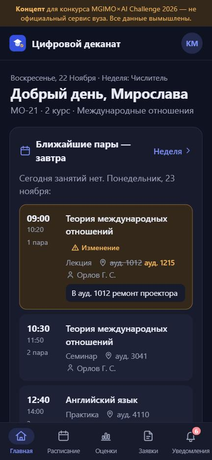
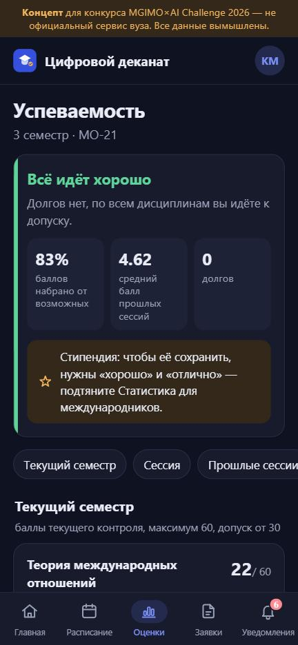
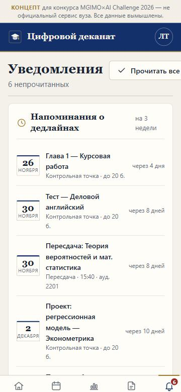
HttpOnly, SameSite=Lax, по HTTPS ещё и Secure), недоступный скриптам. На сервере хранится только отпечаток пропуска, срок 7 дней. «Выйти на всех устройствах» гасит все пропуска.DATABASE_URL, код не меняется.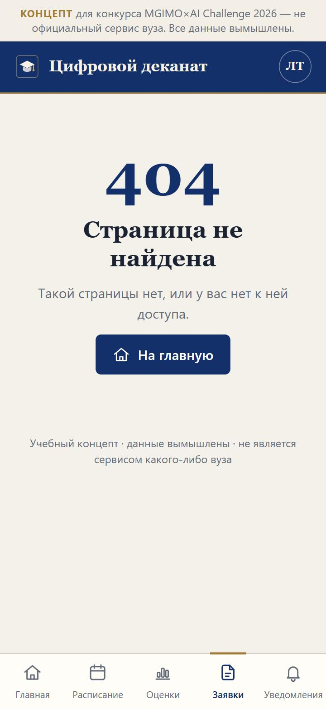
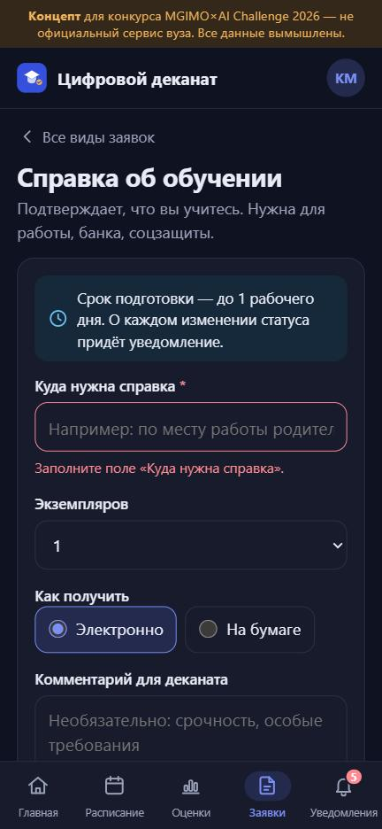
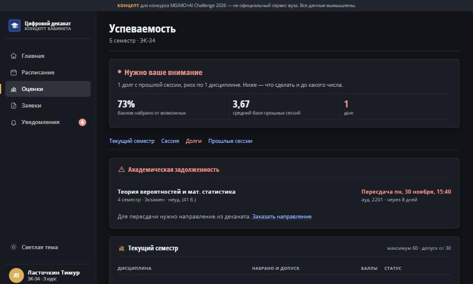
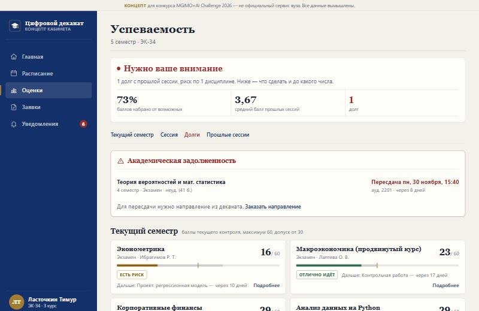
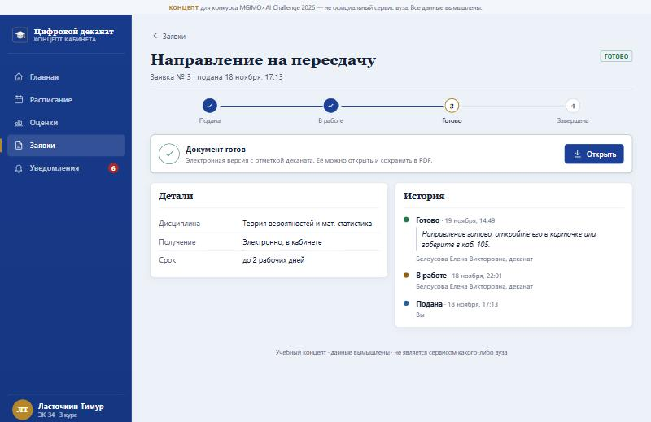
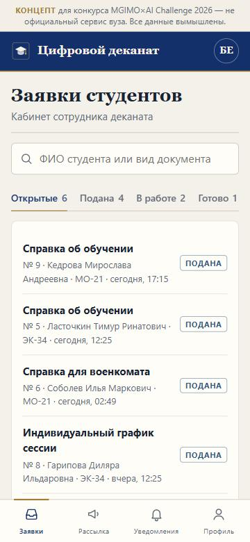
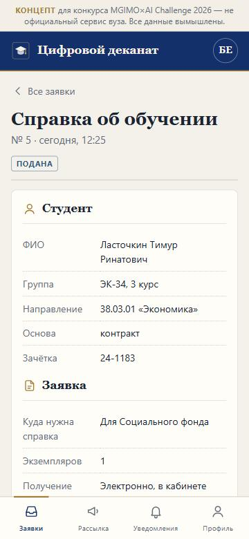
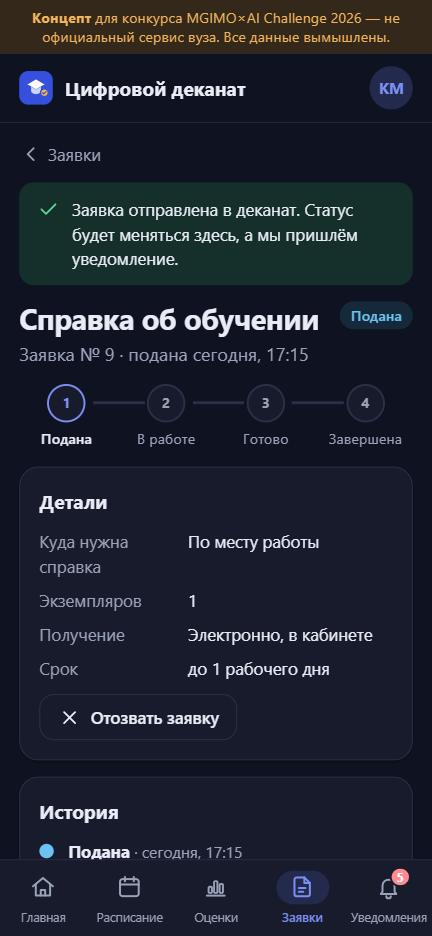
Код, тексты, иконки и логотип созданы с нуля для конкурса. Подробности для разработчиков — в README.md и AGENTS.md репозитория.